キャッシュレス世界旅行レポート最後となる第7弾では、Amazonやスターバックスなど、さまざまなキャッシュレスを推進させている大企業が集結しているアメリカのシアトルを調査した。
日本で既にトレンドとなっている「キャッシュレス」。だが、日本のキャッシュレス比率は先進国の中では非常に低いことをよく耳にする。日本のキャッシュレス化に向けたさまざまな取り組みが官民問わず行われている一方で、世界各国ではどのようにキャッシュレスが推進されているのか。そんな疑問を、インフキュリオン・グループに来年度入社する東京大学4年工学部物理工学科の森本颯太（はやた）が、内定者インターンとして「現金決済禁止という制約のもと完全キャッシュレスで世界11カ国を1カ月間単独」で調査。各国のキャッシュレス事情について現地の雰囲気とともに、その様子を7回に渡ってレポートしていく。現金が使えないからこそできる体験。現金がないと何もできない国もあれば、どんなところでもカードやアプリで決済できる国などさまざまで波乱万丈な旅となった。
「電子決済総覧」によれば、民間最終消費支出に占めるカード決済比率が約50％と、日本よりかなりキャッシュレスが進んでいるアメリカではあるが、特にシアトルのキャッシュレス事情は他の都市に比べ状況が異なるようだ。シアトル発のStarbucks、巨大ECサイトやAmazon Goなどでキャッシュレスを世界的に推進させているAmazonなど多くの大企業がひしめくこの都市では、さまざまな場所で現金支払いからカード、モバイル決済への移行を果たしている。
今回はシアトルで実際に体験した、AmazonやStarbucksなどのモバイル決済アプリ、ミレニアル層に支持されている個人間送金アプリ、およびモバイル決済可能な移動手段についてそれぞれ紹介する。
キャッシュレスを推進させる大企業
1.1 拡大を続ける「Amazon Go」
既に多くの方が新聞やニュースなどで見かけたであろう、スマートフォン一つで完結するレジのないコンビニ 「Amazon Go」。店内で欲しい商品を取りそのまま店を出るだけで、レジを通さなくともアプリで決済が行われる近未来のコンビニである。2018年始め、Amazon本社の近くに第1号店舗をオープンしたのち、同年9月に2店舗をシアトルに、1店舗をシカゴにオープンした。今後は3,000店舗を目指しており、Amazon Goの快進撃が止まらない*1。
写真1. 2018年1月にオープンしたAmazon Go第1号店
店内に入るためには専用のAmazon Goアプリが必要だ。このアプリは、ダウンロードし、決済手段を登録すれば使用できる。後はアプリ画面で表示されるQRコードを入り口のゲートにスキャンさせ、入店するだけだ。
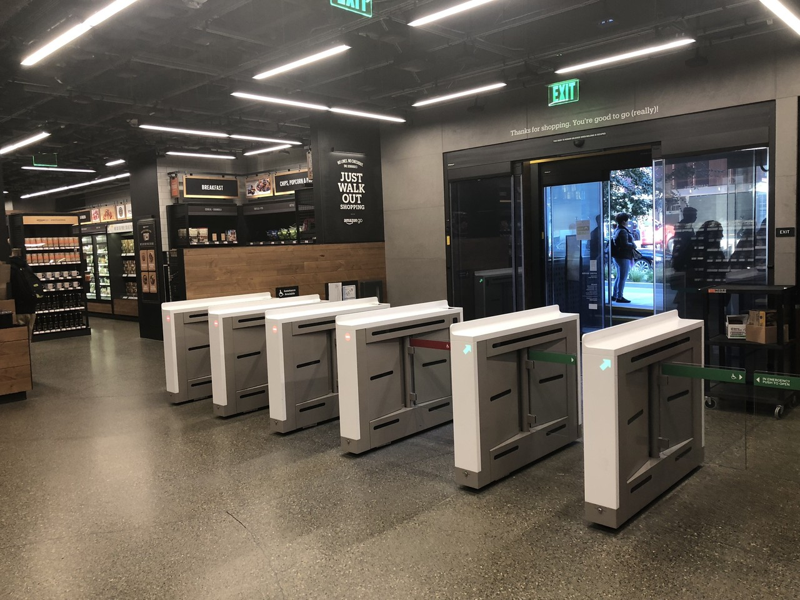
写真2. 入り口のゲート
ゲートの上には無数のカメラが設置されている。このカメラがゲートでのQRコードスキャンと結びつき、入店してきた顧客を店内で追跡する。
店内に置かれている商品はいたって普通で、飲み物やお菓子、冷凍食品からサンドイッチなど、一般のコンビニと変わらない。棚には圧力センサーが設置されており、何か商品を取り出すと個数や種類が感知される。

写真3. 店の天井を覆う無数のカメラ
欲しいものを手にした後は、レジを通さずそのまま出口のゲートに向かう。出口では入り口とは違いQRコードのスキャンは不要なので、そのまま出るだけで購入完了となる。出口のゲートをくぐった数分後にアプリに通知が来て、買った商品の種類、個数、総額やさらには店内にいた時間なども明記されたレシートが届く。もし自分が購入した商品とは違うものが含まれていた場合は、アプリ上で払い戻しが可能である。
ちなみに店内には商品の補充や管理のために数人の店員が常駐しているのだが、店員によると商品の間違いはほとんどないとのことであった。筆者も商品を何度も取ったり戻したりを繰り返してみたのだが、レシートには正確な商品数が記載されていた。
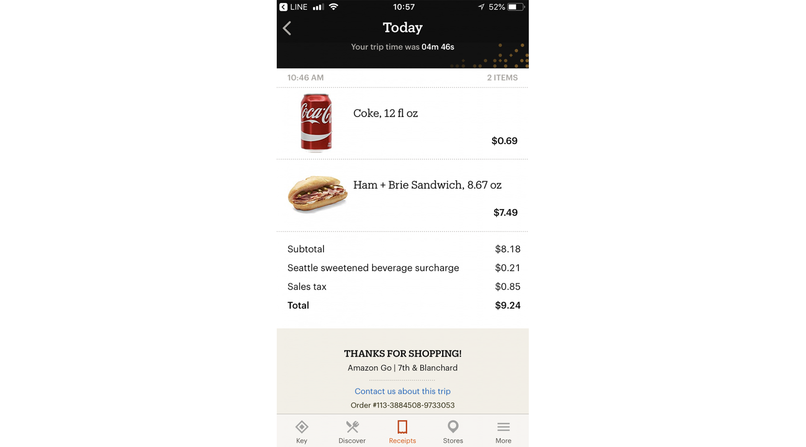
写真4. 店から出ると数分後にレシートがアプリ内で表示される
Amazon Go店内には休憩スペースがあり、電子レンジなども完備されている。また座席にはコンセントが設置されており、店内で使用可能な無料Wi-Fiと合わせて非常に快適であった。
 写真5. 各店舗にはイートインスペースがある
写真5. 各店舗にはイートインスペースがある
先日オープンした2、3号店も調査してみたが、システム自体は1号店とは変わらない。ただ驚くべきことに、1号店は観光客も多く、使い方に戸惑う人も多かったのに対し、2、3号店は市民の生活に溶け込んでいた。
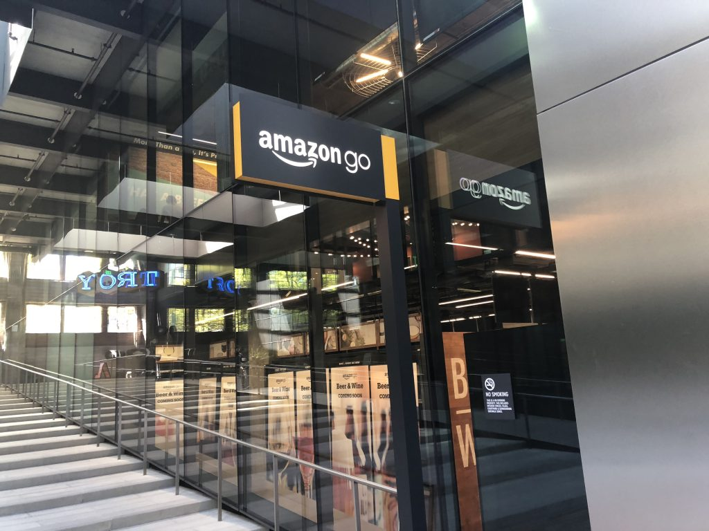
写真6. Amazon Go2号店 オフィスビルの一角にオープンした
店舗はオフィス街の一角や図書館の前など人通りの多い場所にあり、お昼になると休憩中のサラリーマンが当たり前のように出入りしている。「いつも使っているよ。携帯一つでなんでもできちゃうから楽だもの」、とランニング途中に入店していた女性が語っていたように、レジに並ぶ手間を省ける便利さが顧客の心を掴んでいるのだろう。
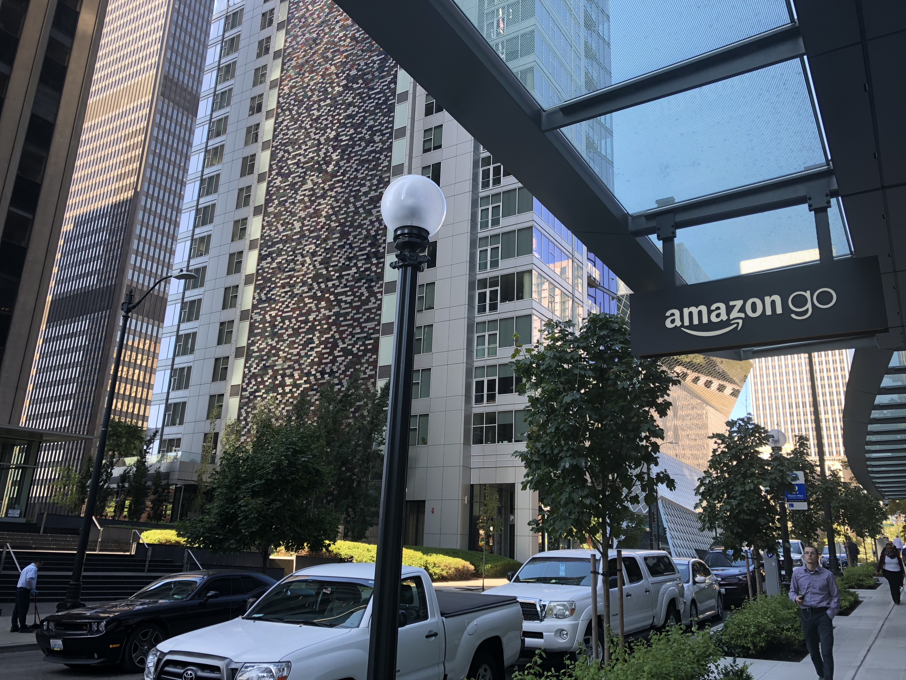
写真7. Amazon Go3号店 目の前にはシアトル図書館がある
3店舗全てで実際に体験してみたが、いずれも並ぶことなくスマートに買い物ができ、わざわざ財布を取り出す手間が省けるので非常に便利であった。拡大を続けるAmazon Goの今後の展開に目を離せない。
1.2 ECサイトとの連携「Amazon Books」
Amazonの実店舗として2015年にシアトルで第1号店をオープンしたのち、現在ではアメリカ全土に数十店舗を展開している「Amazon Books」。Amazonらしく、実店舗でも現金お断りのキャッシュレス店舗となっている。今回はワシントン大学のすぐ横にあるAmazon Books第1号店へと足を運んだ。
写真9. ワシントン大学横にあるショッピングセンター内に第1号店がある
広い店舗内には書籍だけでなく、KindleやAmazon Echoなどの電化製品も展開されていた。書籍はAmazonで評価が高いものが配置され、随時店員によって更新されている。また全ての書籍は表紙が見えるように陳列されており、購入したい商品がすぐ目に入るような工夫がなされていた。
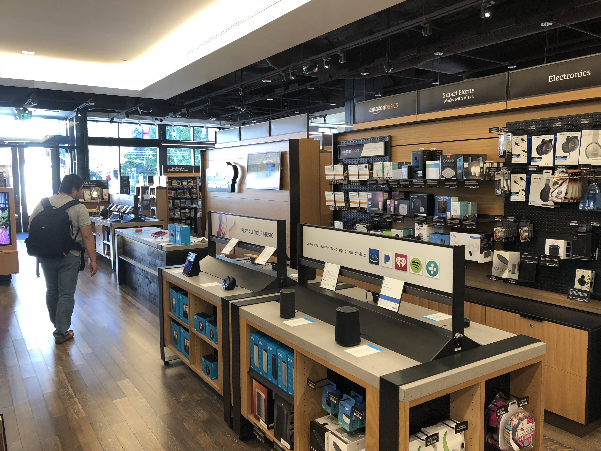
写真10. Amazon Booksの店内
決済方法はAmazonアプリかカードのみであった。ただし日本のAmazonアカウントではエラーが出てしまうので、アメリカのAmazonアカウントの取得をしておく必要がある。
Amazonアプリを通して決済をする場合は、レジにあるQRコードを読み取ったあと、画面に表示される自分のバーコードを店員に読み取ってもらう。するとアプリに登録してあるカードで決済が完了する。
写真11. 購入後に登録したメールアドレスにレシートが届く
また、欲しい書籍の商品をAmazonアプリのカメラでスキャンすると、表紙の画像を認識して値段やAmazonの評価なども確認することができた。
写真12. 商品をアプリでスキャンするとAmazonでの評価などが表示される
Amazon GoやAmazon Booksでは、既存のプラットフォームであるECサイトのアカウントにひも付けすることでキャッシュレス決済を可能にしていた。
それに対し、下記の通りStarbucksアプリの展開は一味違った。
1.3 事前注文可能なStarbucksアプリ
現金以外の決済手段として、カード以外にもApple PayやGoogle Payがあるのは有名だ。実はアメリカにおいて、これらのモバイル決済はカード決済に比べ特に優位性がなく、利用率が伸び悩んでいるそうだ。新たな決済サービスを展開するためには、強い利用動機を促す何かしらの優位性を考える必要がある*2。
そんな中、シアトル発のStarbucksがモバイルウォレットアプリを展開していると聞き、実際に使ってみた。
Starbucksのアプリにはモバイルウォレット機能がある。これは、クレジットカードやギフトカードなどを使ってアプリに現金をチャージしておくと、そのアプリを使って店舗でQRコード決済ができる、というものだ。「電子決済総覧」によると、同社は2010年からモバイルウォレットアプリをスタートさせ、2016年第4四半期にはウォレットアプリのユーザーが約800万人で、同時期の米Starbucks全取引の27％をモバイル決済が占めるまで成長しているそうだ*2。
ここまで普及が進んでいる理由として、このアプリがただ決済を行うだけではない、ということが挙げられる。写真13のように、アプリ内での行動範囲が広いため、ユーザーは強い利用動機を得ることができる。この中でも、事前注文が可能となる「Mobile Order & Pay」と「リワードプログラム」に注目してみる。
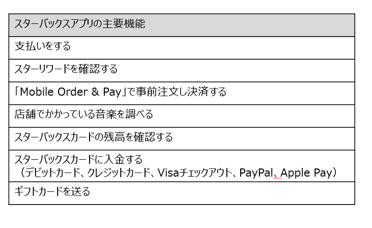
写真12. 商品をアプリでスキャンするとAmazonでの評価などが表示される
「Mobile Order & Pay」
朝の仕事前や休日は多くの客で賑わうため待ち時間が長くなってしまうが、この「Mobile Order & Pay」を使えば混雑時でもスムーズに注文をすることができる。「Mobile Order & Pay」は来店前にアプリで注文と決済を済ませ、自分で指定した店舗で列に並ばず直接商品を受け取ることができるという機能だ。忙しい時間帯に行列ができることの多い繁忙店でも、楽にコーヒーを購入することができるという利便性の高さが支持されていた。
せっかくなので筆者もアプリをダウンロードして使ってみた。アメリカ版Apple Storeからアプリをダウンロードして、アプリ内で専用のモバイルカードを作成する。アメリカのクレジットカードなどを登録することで、そのカードにチャージが可能となる。アメリカの銀行口座を持っていない場合は、スーパーなどで購入できるStarbucksのギフトカードを利用することでモバイルカードにチャージをすることができた。
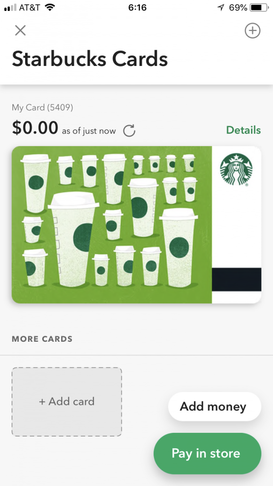
写真14. アプリ内でモバイルカードを取得可能
モバイルカードにチャージした後は、アプリメニューから自分が注文したいものを選択する。このときにStarbucksならではのトッピングや味の変更など細かい注文も可能であり、普段なら注文時間が長くなってしまうため遠慮しがちなトッピングなども事前注文からなら簡単にできた。注文が終わると、位置情報をもとに受け取り可能な店舗を探し選択すると完了する。
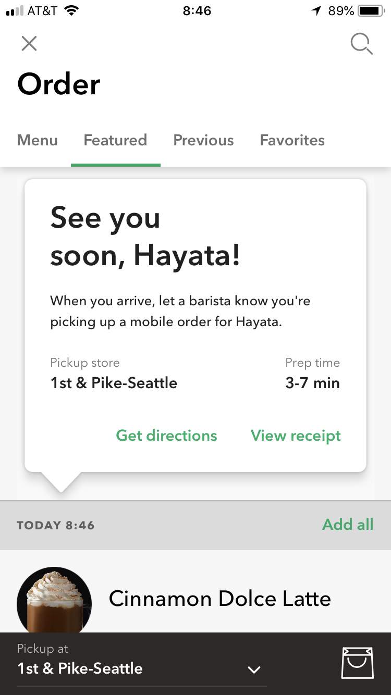
写真15. 注文後に待ち時間などが明記される
アプリ上で待ち時間も明記されているので、時間を合わせて店舗に出向くことができる。店舗についてから数分後、店員から名前を呼ばれ、そのまま受け取ることができた。店頭で注文している人もいたが、店内に入ってすぐコーヒーを受け取って出る人も多く見られた。
その後にアプリを見ると、チャージ金額から注文した分の金額が引かれていた。
実は今回、コーヒーとサンドイッチを頼んでいたが、サンドイッチが売り切れだったため実際に受け取ったのはコーヒーのみだった。しかしアプリ上ではサンドイッチ分の料金も引かれており、Amazon Goのアプリにはある注文取消しのボタンは見当たらなかったので、放っておけば勝手に取り消してもらえると思っていたがそうはならなかった。カード決済やモバイル決済の注意点として、払い戻しの手順が現金支払いに比べ複雑になってしまうことが挙げられるが、それを見事に実体験として感じることができた。
写真16. カウンターにて名前を呼ばれ、商品を受け取ることができる
リワードプログラム
Apple Payにはない独自モバイル決済の利点として、「スターリワード」というリワードプログラム機能がある。ユーザーは決済の金額に応じてスターを獲得でき、ある一定の個数を超えるとレベルが上がり、フードやドリンクが無料となる。このような独自の決済の動機付けにより、利用者は年々増え続けている。
写真17. スターリワード
完全キャッシュレス店舗も
シアトルには実験店舗として、モバイルウォレットもしくはカード支払いしか受け付けないキャッシュレス店舗が存在する。
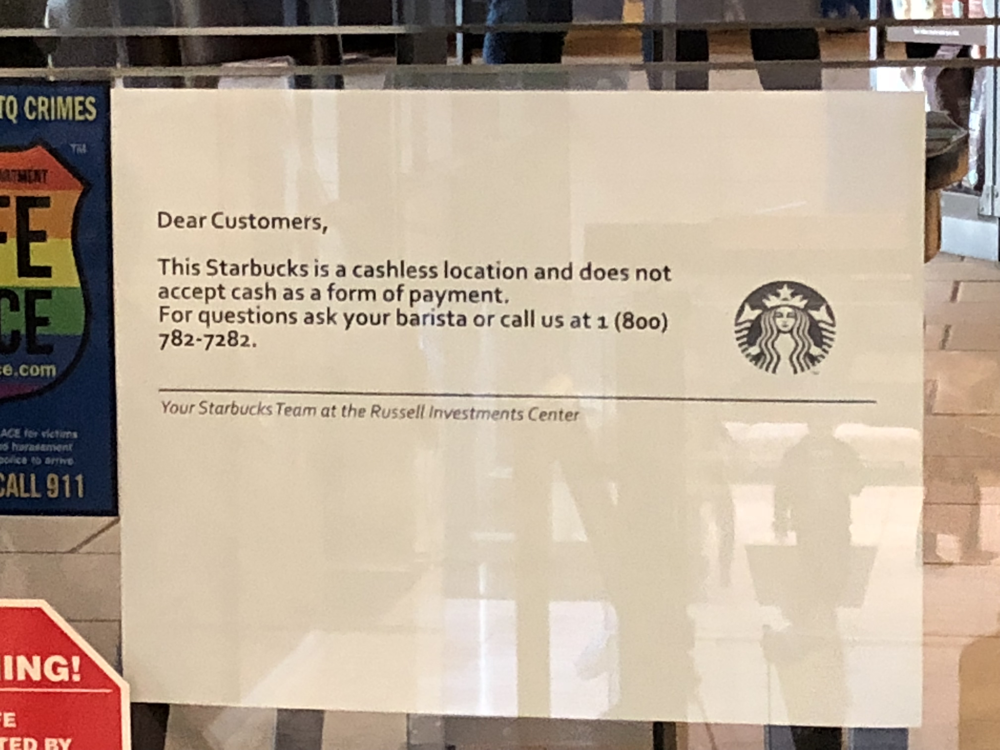
写真18. 現金お断りの張り紙も
オフィス街の中にひっそりと佇むキャッシュレス店舗の外見は、普通の店舗となんら変わらない。しかしレジには現金が一切なく、顧客はスマートフォンを取り出し決済を済ませていた。店員によると、決済手段としてカードよりこのモバイルアプリの使用率の方が高いとのことであった。また店員側のメリットとして、レジを打つ必要がないため他の作業に集中できるとも話していた。
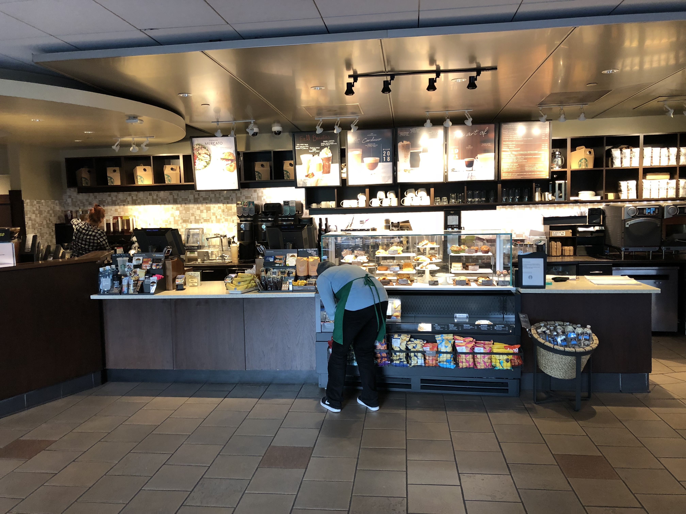
写真19. キャッシュレス店舗
個人間送金アプリの普及
近年日本でも注目を浴びている個人間送金アプリ。食事代金の割り勘時などの金銭の貸し借りを、現金を使わずスマートフォン一つで行うことができ、大変便利である。
日本における個人間送金アプリとしてはLine Payなどがよく知られているが、実際に使用しているユーザーは多くないだろう。それに対してアメリカでは、ほとんどの若者が利用していると言っても過言ではない個人間送金アプリ「Venmo」が活躍していた。
2.1 送金履歴を公開可能な「Venmo」
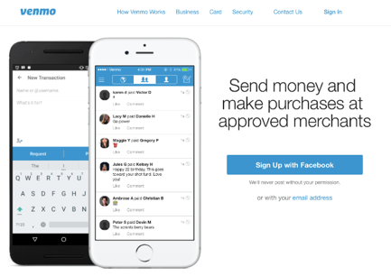
写真20.「Venmo」
2009年にサービスを開始したVenmoのユーザー数は2,000万人を超えている。2016年の取引高は176億ドル*3だったものが、2018年には第一四半期だけで120億ドル（約1.3兆円）と、急成長を継続している。
利用方法はVenmoのアプリをダウンロード後、アカウントを作成しアメリカの銀行口座もしくはクレジットカードを登録するだけである。自分が送金したい人のアカウントを登録していれば、アプリ上で瞬時に送金が可能だ。例えば数人でレストランに行った際は、誰かがまとめてクレジットカードで支払い、その他の人がVenmoを通して割り勘分を送金することができ、同国におけるキャッシュレス社会への後押しの一因となっている。
アメリカの銀行口座を持っていない筆者はアプリを使うことができなかったため、ワシントン大学の学生（20名）の利用状況を調査した。その結果が写真21である。
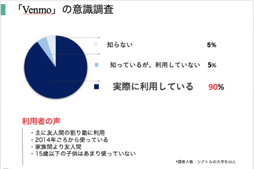
写真21.意識調査の結果
ほぼ全員がVenmoを知っており、アプリをインストールしていた。用途も多岐にわたっており、シェアハウスをしていれば家賃や光熱費などを割り勘できるなど、便利さが伺える。またVenmoの特徴として、送金した事実を自分の友人ネットワークに公開できる機能がある。この機能により、大人数の割り勘時などは各々がメッセージを添えた送金履歴を閲覧可能で、トラブルになりかねないお金のやりとりをフランクかつオープンな環境で行うことができる。学生にとっては安心かつ、どんな一言を添えるかで楽しめる機能である。
写真22. Venmoでは送金の事実を友人のタイムラインに表示させることが可能
しかし図が示すように家族同士での利用は少なく、Venmoの使用はやはり学生などのミレニアル層がほとんどであった。30歳以上の方はPayPal、もしくはそもそも送金アプリを使用していないとのことだった。
Venmoの独壇場にさせないために、近年銀行主体の個人間送金アプリ「Zelle」など他にも数社がこの市場に参画しており、今後の動向に注目したい。
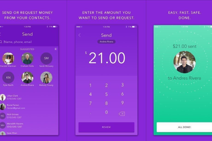
写真23. 銀行主体の「Zelle」（画像引用元：https://www.theverge.com/2018/2/16/17021656/zelle-venmo-scam-false-transactions-bank-app-no-refunds）
モバイル決済可能な移動手段
これまでの国と同様、アメリカでもタクシーやシェア自転車などの移動手段はキャッシュレスで決済可能であった。
CO2削減など環境にも優しいとされ、近年利用者数が各国で増え続けているシェア自転車。日本でもみずほ銀行やメルカリがシェア自転車に参画しているが、実際に都内で使っている人を見るのはまだ稀である。だがシアトルでは日本とは違い、多くのシェア自転車を見かけることができた。
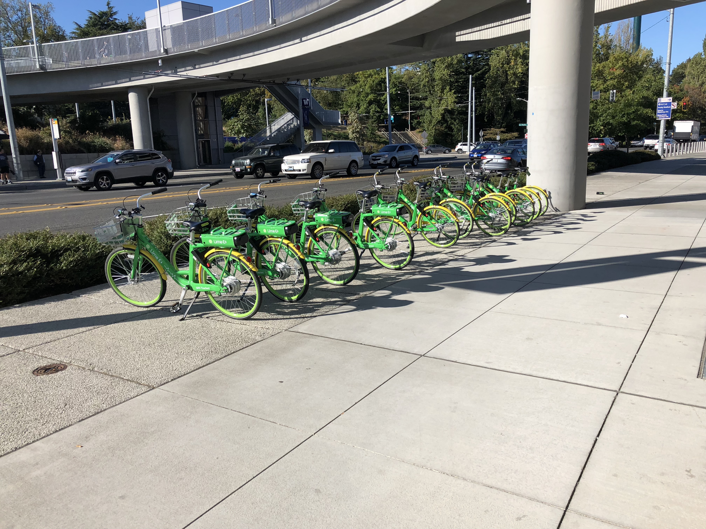
写真24. カラフルな緑がシアトル市内で目立つ
3.1使い勝手の良い「LimeBike」
シアトル市内では写真24のように、緑色の自転車「LimeBike」をよく見かけた。シアトル市の公式サイト「Seattle.gov」によると、シアトルではシェア自転車市場に現在3社が参画しており、利用回数は2018年5月までに130万回を超え、6月は1日に7,200回となっているそうだ*4。シアトルには、3社合わせて1万台ほどのシェア自転車が設置されており、多くの市民が利用しているのを見かけた。
実際にLimeBikeのアプリをダウンロードして利用してみた。利用料金のチャージは5ドルからで、Apple Payで簡単に行うことができた。位置情報をオンにすれば、周辺で利用可能な自転車が地図上に表示される。中国の「Mobike」同様、使いたい自転車に貼られているQRコードをアプリで読み込めば、ロックが解除され使用可能となる。あとは降りたい場所でどこでも乗り捨て可能で、その場でロックをすると利用時間が止まり、アプリに利用明細が届く仕組みとなっていた。
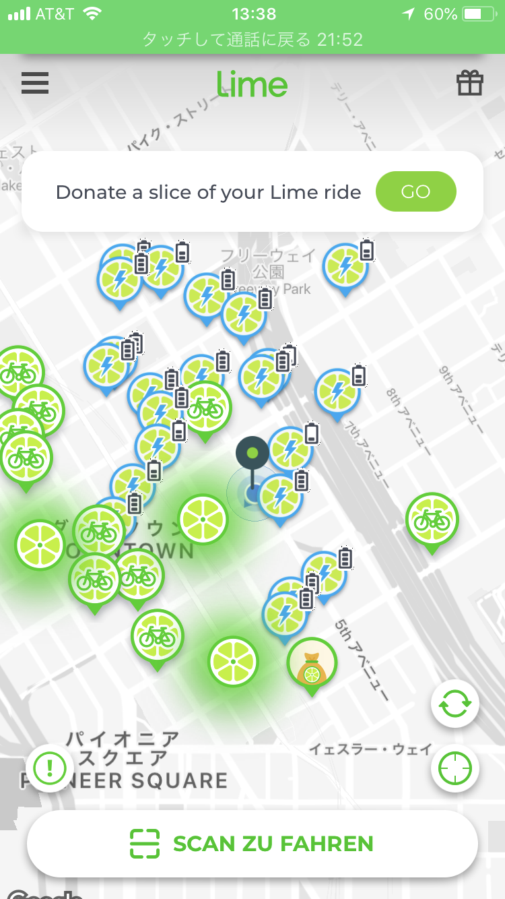
写真25. 位置情報を元に近くの自転車を検索可能
LimeBikeは普通の自転車と電動自転車両方を展開しており、種類によって利用料金が変わる。通常の自転車が30分1ドルであるのに対して、電動自転車であれば初期料金1ドルから乗った距離に応じて追加される。筆者が電動自転車を16分利用した際には2.4ドルであった。どちらも中国で利用したMobikeに比べると高く感じるが、電動自転車の場合は専用の充電場所に返却するとボーナスで少し安くなる。こうした導線で充電切れを抑えているのだろうが、実際には充電切れで使用できない自転車も多く見受けられた。
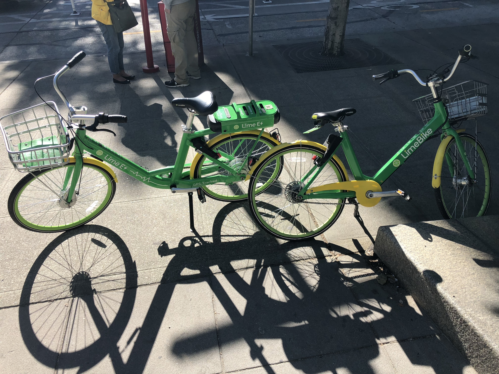
写真26.LimeBikeの電動自転車（左）と通常自転車（右）
スマートフォン一つで自転車に乗れるのはやはり便利であり、ぜひ日本でもシェア自転車が普及してほしいと感じた。
まだまだ出てくるキャッシュレス
「Mobile Order & Pay」のような事前注文システムはStarbucksに限ったことではない。例えばメキシカンフードチェーン店「CHIPOTLE」では、ネットで注文を完了させると注文の列に並ぶことなく店頭ですぐに商品を受け取ることが可能であった。
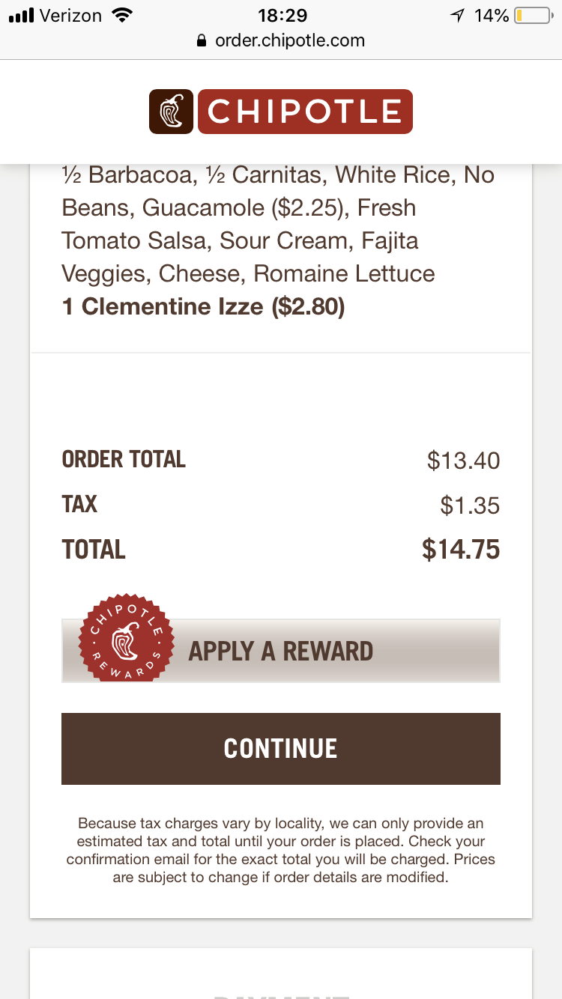
写真27. Webでの事前注文が可能（アメリカのクレジットカードが必要）
事前注文とは少し違うが、Uber EatsやCaviarなどの配達アプリを使った宅配サービスも充実している。筆者が「CHIPOTLE」で食事をしていたとき、たまたま注文された商品を取りに来たCaviarのスタッフは「キャッシュレスのおかげで大忙しさ」と言いながらその商品を大きなバックに詰めていた。
アメリカまとめ
モバイルアプリによる決済の機会が年々増加しているシアトル。だがそれ以上に、実生活においてはクレジットやデビットカードの利用が社会の隅々まで行き渡っているように感じた。本レポートでは省略したが、「Square」や「Clover」をはじめとしたカード決済端末が充実しており、どこでもカード決済が可能であった。
以上で、７回に渡った世界一周キャッシュレスレポートは終了となります。
現金が使えないため、毎日試行錯誤しながらの旅となり非常に大変ではありましたが、各国の決済事情を実体験するいい機会となりました。このレポートが少しでも関係者様の参考になり、楽しんでいただけていれば光栄です。ご覧いただき、ありがとうございました！
参照記事
*1：Amazon Will Consider Opening Up to 3,000 Cashierless Stores by 2021
*2：電子決済総覧2017-2018
https://www.cardwave.jp/products/detail.php?product_id=82
*3：Venmo is discontinuing web support for payments and more
https://techcrunch.com/2018/06/15/venmo-is-discontinuing-web-support-for-payments-and-more
*4：So, what’s next for bike share in Seattle?
http://sdotblog.seattle.gov/2018/07/13/so-whats-next-for-bike-share-in-seattle/